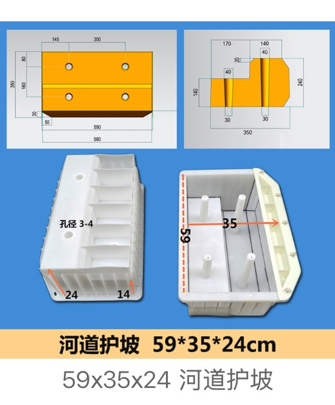

Where these moulds are used
River banks, canals, irrigation channels, road embankments, highway side slopes, drainage ditches, reservoir slopes and ecological restoration projects
Main product scope
Hexagonal slope block moulds, hollow revetment block moulds, interlocking slope protection moulds, river-bank concrete block moulds and ecological grass-planting block moulds
Customization details to confirm
- Finished block length, width, thickness and opening size
- Block type: hexagonal, hollow, interlocking, grass-planting, river-bank or canal type
- Application: river, canal, road slope, highway embankment, reservoir or drainage project
- Logo, letters, surface pattern, anti-slip or interlocking detail requirements
- Quantity, destination country and mixed-size packing requirements
OEM and material notes
Zhihua can review standard catalogue options or custom mould feasibility from drawings, dimensions and sample photos. For custom plastic moulds, PP and ABS are the main material options. Logo, letters and patterns can be customized when the mould structure allows.
Requesting a quotation
Prepare the finished product size, application, order quantity, target country, material preference and any drawing or sample photo. This reduces back-and-forth and helps the factory review feasibility faster.